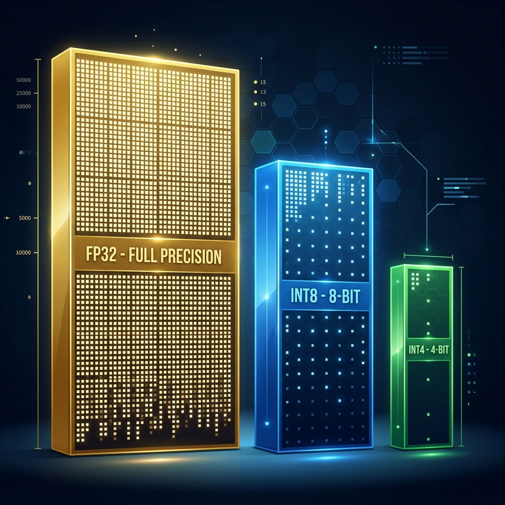
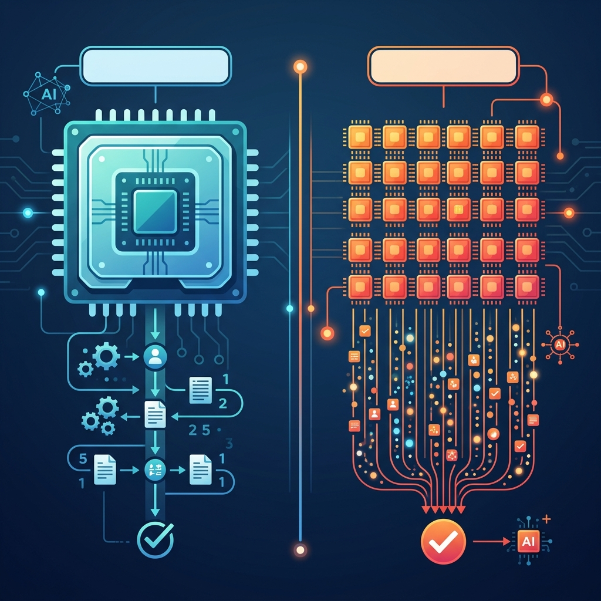

A complete guide to running Google's Gemma 3 LLM entirely on your Android phone — no internet, no servers, no cloud.
Understanding the magic behind on-device inference
Your text travels to massive data centers with hundreds of GPUs. Servers process it and return the answer.
Needs Internet Privacy Risk Very Powerful
The entire AI "brain" lives as a single file on your phone. Your processor does ALL the math locally.
100% Offline Private Limited Power
Every time you send a message, your phone performs these 5 steps — in milliseconds:
"Hello" → [17534] — Your text is converted into numbers. Each number is
a "token" representing a word or word-piece from a 256,000-word vocabulary.
[17534] → [0.23, -0.67, 0.12, 0.89, ...] — Each token becomes a
256-dimensional vector that captures the "meaning" of that word in mathematical space.
The vector passes through 18 transformer layers. Each layer performs massive matrix multiplications with millions of weights, refining the meaning through Self-Attention ("which words matter?") and Feed-Forward ("what comes next?").
After all layers, the model outputs probabilities for every possible next word: "Hi" → 15.2%,
"Hello" → 12.8%, "Hey" → 8.3%... It randomly picks one based on temperature and
topK settings.
The chosen word is added to the sequence, and Steps 2–4 repeat to generate the
next word. This continues until the model generates a special
<eos> (End of Sequence) token.
What's inside that 270MB .litertlm file?
graph LR
A["gemma3
Google Gemma 3
Model Family"] --> B["270m
270 Million
Parameters"]
B --> C["it
Instruction
Tuned"]
C --> D["q8
8-bit
Quantization"]
D --> E[".litertlm
LiteRT-LM
Model Bundle"]
style A fill:#3b82f6,stroke:#3b82f6,color:#fff
style B fill:#8b5cf6,stroke:#8b5cf6,color:#fff
style C fill:#06b6d4,stroke:#06b6d4,color:#fff
style D fill:#10b981,stroke:#10b981,color:#fff
style E fill:#f59e0b,stroke:#f59e0b,color:#fff
graph TB
TASK["📦 gemma3-270m-it-q8.litertlm"]
TASK --> W["🧮 Model Weights
270M numbers, quantized to 8-bit"]
TASK --> T["📖 Tokenizer
Dictionary mapping words ↔ numbers"]
TASK --> C["⚙️ Configuration
Layer count, hidden size, etc."]
TASK --> CT["💬 Chat Template
How to format user/model turns"]
TASK --> M["📋 Metadata
Name, version, features"]
style TASK fill:#8b5cf6,stroke:#8b5cf6,color:#fff
style W fill:#1a1f35,stroke:#3b82f6,color:#e8eaed
style T fill:#1a1f35,stroke:#06b6d4,color:#e8eaed
style C fill:#1a1f35,stroke:#10b981,color:#e8eaed
style CT fill:#1a1f35,stroke:#f59e0b,color:#e8eaed
style M fill:#1a1f35,stroke:#ec4899,color:#e8eaed
The model's 270M "weights" are decimal numbers like 0.3847264. Quantization compresses them
to use less memory:

| Format | Bits per Weight | Size for 270M | Quality |
|---|---|---|---|
| FP32 (Full Precision) | 32 bits (4 bytes) | ~1.08 GB | ⭐⭐⭐⭐⭐ Best |
| Q8 / INT8 (What We Use) | 8 bits (1 byte) | ~270 MB | ⭐⭐⭐⭐ Very Good |
| Q4 / INT4 | 4 bits (0.5 bytes) | ~135 MB | ⭐⭐⭐ Good |
Just predicts the next word.
Input: "The capital of France is"
Output: "Paris, which is also..."
Trained to follow instructions and chat naturally.
Input: "What is the capital of France?"
Output: "The capital of France is
Paris!"
How all the pieces fit together
graph TB
subgraph FLUTTER["🎯 Flutter App (Dart)"]
CS["📱 chat_screen.dart
UI Layer - Messages, Input, Status"]
LS["⚙️ llm_service.dart
Business Logic - Load, Generate, Offload"]
CS -->|"user types message"| LS
LS -->|"response text"| CS
end
subgraph PLUGIN["📦 flutter_gemma Plugin (Dart + Kotlin)"]
IM["InferenceModel
Model wrapper"]
IC["InferenceChat
Chat session manager"]
LS --> IM
IM --> IC
end
subgraph NATIVE["🔧 Android Native (Kotlin)"]
EF["EngineFactory
Routes .litertlm → LiteRT-LM"]
IC -->|"Platform Channel"| EF
end
subgraph ENGINE["⚡ LiteRT-LM Engine (Kotlin + C++)"]
LE["LiteRtLmEngine
Model loading"]
LS2["LiteRtLmSession
Conversation API"]
EF --> LE
LE --> LS2
end
subgraph CPP["🧮 C++ Runtime (liblitertlm.so)"]
XNN["XNNPack CPU Backend
ARM NEON optimized math"]
LS2 --> XNN
end
style FLUTTER fill:#1e293b,stroke:#3b82f6,color:#e8eaed
style PLUGIN fill:#1e293b,stroke:#8b5cf6,color:#e8eaed
style NATIVE fill:#1e293b,stroke:#06b6d4,color:#e8eaed
style ENGINE fill:#1e293b,stroke:#10b981,color:#e8eaed
style CPP fill:#1e293b,stroke:#f59e0b,color:#e8eaed
sequenceDiagram
participant U as 👤 User
participant CS as 📱 ChatScreen
participant LS as ⚙️ LlmService
participant IC as 💬 InferenceChat
participant ENG as ⚡ LiteRT-LM
participant CPU as 🧮 C++ Runtime
U->>CS: Types "Hello" & presses Send
CS->>LS: generateResponse("Hello")
LS->>IC: addQueryChunk(Message.text("Hello"))
IC->>ENG: sendMessage("Hello")
ENG->>CPU: Tokenize → Embed → Transform
loop For each word
CPU->>CPU: Run 18 transformer layers
CPU->>CPU: Sample next token
CPU->>ENG: Return token
end
ENG->>IC: "Hi! How can I help you?"
IC->>LS: TextResponse(...)
LS->>CS: Return response string
CS->>U: Display in chat bubble
The most critical part — what runs the actual AI
| Engine | SDK | Files | Status |
|---|---|---|---|
| MediaPipe Engine | Old Google MediaPipe SDK | .bin, .tflite |
JNI bugs with .task |
| LiteRT-LM Engine | New Google LiteRT-LM SDK | .litertlm |
✅ What we use |
Key Discovery: The Google AI Edge Gallery app uses the LiteRT-LM
Engine — the exact same SDK. The model uses the native .litertlm
format which routes directly to the LiteRT-LM engine. We patched
EngineFactory.kt to fix this.
graph LR
FILE[".litertlm file"]
subgraph BEFORE["❌ Before Patch"]
direction TB
MP["MediaPipe Engine"]
EMPTY["Empty Response ''"]
MP --> EMPTY
end
subgraph AFTER["✅ After Patch"]
direction TB
LR2["LiteRT-LM Engine"]
WORKS["Working Response! 🎉"]
LR2 --> WORKS
end
FILE -->|"ORIGINAL routing"| MP
FILE -->|"PATCHED routing"| LR2
style BEFORE fill:#1a0a0a,stroke:#ef4444,color:#e8eaed
style AFTER fill:#0a1a0a,stroke:#10b981,color:#e8eaed
style EMPTY fill:#ef4444,stroke:#ef4444,color:#fff
style WORKS fill:#10b981,stroke:#10b981,color:#fff
style FILE fill:#f59e0b,stroke:#f59e0b,color:#fff

Technology: XNNPack with ARM NEON
Pros: Always works, no driver issues
Cons: Slightly slower than GPU
Reliable
Technology: OpenCL on Adreno 650
Pros: Theoretically faster
Cons: Driver bug on Snapdragon 865 → <pad> tokens
Broken on your device
Exactly what happens in code when you load a model, chat with it, and unload it
When you tap the "Load Model" button and select a .litertlm file, here is
everything that happens — from your finger tap to the model being ready:
sequenceDiagram
participant U as 👤 User
participant UI as 📱 ChatScreen
participant FS as 📂 File System
participant SVC as ⚙️ LlmService
participant PLG as 📦 FlutterGemma
participant MGR as 🗂️ ModelManager
participant NAT as 🔧 Kotlin Native
participant EF as 🔀 EngineFactory
participant ENG as ⚡ LiteRT-LM
participant CPP as 🧮 C++ Runtime
U->>UI: Taps "Load Model" button
UI->>UI: Opens FilePicker dialog
U->>UI: Selects gemma3-270m-it-q8.litertlm
Note over UI,FS: Step 1: Secure File Copy
UI->>FS: Get ApplicationDocumentsDirectory
FS-->>UI: /data/data/com.example.app/files/
UI->>FS: Copy .litertlm file to app-private dir
Note over FS: Bypasses Android Scoped Storage
Note over UI,SVC: Step 2: Install Model
UI->>SVC: loadModel("/data/.../gemma3.litertlm")
SVC->>PLG: FlutterGemma.installModel()
PLG->>MGR: Register model in SharedPreferences
MGR-->>PLG: Model registered as active
Note over SVC,ENG: Step 3: Create Engine
SVC->>PLG: FlutterGemma.getActiveModel()
PLG->>NAT: PlatformChannel → createModel()
NAT->>EF: EngineFactory.createFromModelPath()
Note over EF: Detects .litertlm → LiteRtLmEngine
EF->>ENG: new LiteRtLmEngine(context)
ENG->>CPP: Load 270MB weights into RAM
CPP->>CPP: Parse model structure
CPP->>CPP: Initialize XNNPack CPU backend
CPP->>CPP: Allocate KV Cache (1024 tokens)
CPP-->>ENG: Engine ready ✅
ENG-->>NAT: Model loaded
NAT-->>SVC: InferenceModel created
Note over SVC,ENG: Step 4: Create Chat Session
SVC->>PLG: model.createChat(topK, temp, topP)
PLG->>NAT: createSession(config)
NAT->>ENG: new Conversation(samplerConfig)
ENG-->>SVC: InferenceChat ready ✅
SVC-->>UI: Status → LlmStatus.loaded
UI->>U: Shows "Model loaded successfully!" ✅
Memory Impact: After loading, the model occupies approximately ~350-400 MB of RAM (270 MB weights + tokenizer + KV cache + runtime buffers). Your Galaxy S20 FE has 6-8 GB RAM, so this is manageable.
Here is the actual code from llm_service.dart with every line explained:
// ── Step 1: Verify the model file exists on disk ──
if (!File(filePath).existsSync()) {
throw Exception("Model file does not exist");
}
// ── Step 2: Register the model with flutter_gemma's manager ──
// This copies metadata to SharedPreferences and marks it as
// the "active" model. ModelType.gemmaIt tells the plugin this
// model uses Gemma's chat template format.
await FlutterGemma.installModel(
modelType: ModelType.gemmaIt
).fromFile(filePath).install();
// ── Step 3: Load the model into RAM and create the engine ──
// maxTokens: How many tokens of KV cache to allocate (context window)
// preferredBackend: CPU (XNNPack) because GPU has driver bugs
_model = await FlutterGemma.getActiveModel(
maxTokens: 1024,
preferredBackend: PreferredBackend.cpu,
);
// ── Step 4: Create a chat session with sampling parameters ──
// topK: Consider top 64 most probable next words
// temperature: 1.0 = standard randomness
// topP: Keep words until 95% cumulative probability
_chat = await _model?.createChat(
topK: 64,
temperature: 1.0,
topP: 0.95,
);When you type a message and press Send, here is the exact journey your text takes through every layer of the app:
sequenceDiagram
participant U as 👤 User
participant UI as 📱 ChatScreen
participant SVC as ⚙️ LlmService
participant IC as 💬 InferenceChat
participant TR as 🔤 Transformer
participant NAT as 🔧 Kotlin Native
participant ENG as ⚡ LiteRT-LM
participant CPU as 🧮 C++ XNNPack
U->>UI: Types "What is Flutter?" and presses Send
UI->>UI: Add user message to chat list
UI->>UI: Show loading indicator
UI->>SVC: generateResponse("What is Flutter?")
Note over SVC,IC: Prepare the Prompt
SVC->>IC: addQueryChunk(Message.text(...))
IC->>TR: transformToChatPrompt()
Note over TR: For .litertlm files: raw text only
Note over TR: Engine handles chat template internally
TR-->>IC: "What is Flutter?"
IC->>NAT: PlatformChannel → addQueryChunk()
Note over SVC,CPU: Generate Response
SVC->>IC: generateChatResponse()
IC->>NAT: PlatformChannel → generateResponse()
NAT->>ENG: session.getResponse()
Note over ENG,CPU: Native C++ Auto-regressive Loop
ENG->>CPU: Tokenize input
Note over CPU: "What is Flutter?" → [2134, 603, 23891, 235336]
loop Generate each token (word)
CPU->>CPU: Embedding lookup
CPU->>CPU: Pass through 18 transformer layers
Note over CPU: Each layer: Self-Attention → FFN
Note over CPU: ~270M multiplications per token!
CPU->>CPU: Output logits (256,000 probabilities)
CPU->>CPU: Apply topK=64 filter
CPU->>CPU: Apply topP=0.95 filter
CPU->>CPU: Apply temperature=1.0 scaling
CPU->>CPU: Sample one token randomly
Note over CPU: token=7089 → "Flutter"
CPU->>CPU: Update KV Cache
CPU->>CPU: Check if token == EOS
end
Note over CPU: Final token = EOS → Stop generating
CPU-->>ENG: "Flutter is an open-source UI toolkit..."
ENG-->>NAT: Response string
NAT-->>IC: Raw response
IC->>IC: cleanResponse() → strip special tokens
IC->>IC: Store in chat history
IC-->>SVC: TextResponse("Flutter is an...")
SVC-->>UI: Return response string
UI->>UI: Remove loading indicator
UI->>U: Display AI response in chat bubble ✅
Here's the actual inference code from llm_service.dart:
// ── generateResponse() in llm_service.dart ──
Future<String?> generateResponse(String prompt) async {
// Guard: only run if model is loaded and chat exists
if (_status != LlmStatus.loaded || _chat == null) return null;
// ── Step 1: Send the user's message to the chat session ──
// This adds it to the conversation context and sends the
// prompt text to the native engine via Platform Channel.
await _chat!.addQueryChunk(
Message.text(text: prompt, isUser: true)
);
// ── Step 2: Ask the native engine to generate a response ──
// This is a BLOCKING call. It waits until the C++ runtime
// has finished generating ALL tokens (hit <eos>).
// Internally: tokenize → 18 layers × N tokens → detokenize
final response = await _chat!.generateChatResponse();
// ── Step 3: Extract the text from the response object ──
if (response is TextResponse) {
return response.token; // The full generated text
}
return null;
}Speed on your device: The Snapdragon 865 generates approximately 5-15 tokens/second on CPU with this 270M model. A typical 50-word response takes about 3-8 seconds. Larger models (1B+) would be significantly slower.
The app supports two modes of inference. Here's how they differ:
generateChatResponse()
Waits for the entire response to finish before returning. The user sees a loading spinner, then the full response appears at once.
// Blocks until all tokens generated
final response = await
_chat!.generateChatResponse();
// response = "Flutter is a..."Simple Stable
generateChatResponseAsync()
Returns tokens one by one as they're generated. Words appear in real-time, like ChatGPT's typing effect.
// Each token arrives immediately
await for (final token
in _chat!.generateChatResponseAsync()) {
print(token); // "Flutter" "is" "a"...
}Real-time More Complex
When you press the eject/offload button, here's what happens to free up your phone's RAM:
sequenceDiagram
participant U as 👤 User
participant UI as 📱 ChatScreen
participant SVC as ⚙️ LlmService
participant MDL as 🧠 InferenceModel
participant SES as 💬 Session
participant NAT as 🔧 Kotlin Native
participant ENG as ⚡ LiteRT-LM
participant RAM as 💾 Phone RAM
U->>UI: Taps "Eject Model" button
UI->>SVC: offloadModel()
Note over SVC,ENG: Step 1: Close the Chat Session
SVC->>MDL: model.close()
MDL->>SES: session.close()
SES->>NAT: PlatformChannel → closeSession()
NAT->>ENG: conversation.close()
ENG->>RAM: Free conversation state
ENG->>RAM: Free KV Cache (~50 MB)
Note over SVC,ENG: Step 2: Release the Engine
NAT->>ENG: engine.close()
ENG->>RAM: Free model weights (~270 MB)
ENG->>RAM: Free tokenizer (~5 MB)
ENG->>RAM: Free XNNPack buffers (~50 MB)
Note over RAM: ~375 MB freed! 🎉
Note over SVC,UI: Step 3: Reset State
SVC->>SVC: _model = null
SVC->>SVC: _chat = null
SVC->>SVC: status = LlmStatus.unloaded
SVC-->>UI: Status → unloaded
UI->>U: Shows "Load Model" button again
Note over RAM: Phone RAM is freed,\nother apps can use it now
// ── offloadModel() in llm_service.dart ──
Future<void> offloadModel() async {
// ── Step 1: Close the model (triggers session + engine cleanup) ──
// This cascades through: InferenceModel → Session → Kotlin → C++
// Each layer frees its own resources (KV cache, weights, buffers)
await _model?.close();
// ── Step 2: Clear Dart references ──
// Setting to null allows Dart's garbage collector to reclaim
// any remaining Dart-side memory associated with these objects
_model = null;
_chat = null;
// ── Step 3: Update status so UI knows to show Load button ──
_status = LlmStatus.unloaded;
notifyListeners(); // Triggers UI rebuild
}This diagram shows how your phone's RAM usage changes across the entire lifecycle:
xychart-beta
title "Phone RAM Usage During Model Lifecycle"
x-axis ["App Start", "File Copy", "Install", "Load Weights", "KV Cache", "Ready", "Chatting", "Offload", "After"]
y-axis "RAM Usage (MB)" 0 --> 500
bar [50, 80, 85, 350, 400, 400, 420, 80, 50]
| Phase | RAM Used | What's in Memory |
|---|---|---|
| App Start | ~50 MB | Flutter engine, UI framework, Dart VM |
| File Copy | ~80 MB | + File I/O buffers during copy |
| Install | ~85 MB | + Model metadata in SharedPreferences |
| Load Weights | ~350 MB | + 270 MB model weights loaded into RAM |
| KV Cache Allocated | ~400 MB | + KV cache for 1024 token context |
| Ready/Chatting | ~400-420 MB | + Temporary inference buffers |
| After Offload | ~50 MB | Back to baseline — all model memory freed |
Why offloading matters: The model uses ~350 MB of RAM. If you leave it loaded while using other apps, your phone may kill background apps to free memory. Always offload when done chatting!
A map of every important file in the project
Role: Entry point
Creates LlmService and passes it to ChatScreen. Sets up the app theme
and navigation.
Role: Business logic layer
The brain of the app. Manages model lifecycle: loadModel(),
generateResponse(), offloadModel().
Role: UI layer
File picker, model file copying to secure storage, chat message display, loading indicators.
Role: Build protection
Prevents Android's optimizer from deleting MediaPipe/Protobuf classes in release builds.
Routes model files to the correct engine based on extension. .litertlm
files route directly to the LiteRT-LM engine.
Wraps Google's litertlm.Engine. Handles model loading, backend selection (CPU/GPU),
cache directory.
Wraps Conversation API. Handles adding messages, generating responses, token
streaming.
Chat prompt formatting. For .litertlm files, passes raw text (engine handles
templates
internally).
stateDiagram-v2
[*] --> Unloaded
Unloaded --> Loading : loadModel()
Loading --> Loaded : Success
Loading --> Error : Exception
Loaded --> Unloaded : offloadModel()
Error --> Loading : Retry loadModel()
state Loaded {
[*] --> Ready
Ready --> Generating : generateResponse()
Generating --> Ready : Response received
}
5 bugs, 5 fixes — the journey to a working app
timeline
title Bug Fix Journey
R8 Build Failure : Proguard rules : Missing classes
Empty Responses : MediaPipe JNI bug : Thread not attached
SIGABRT Crash : Wrong file format : Bad magic number
Pad Tokens : GPU NaN decode : OpenCL driver bug
Stale Cache : Old file path : SharedPreferences
Missing class com.google.mediapipe.proto.CalculatorProfileProto
Android's code optimizer (R8) stripped MediaPipe classes it thought were unused.
Added proguard-rules.pro with -keep class com.google.mediapipe.** { *; }
Model loads, prompt sent correctly, but response is always ""
MediaPipe's C++ code has a JNI threading bug. Callbacks fail with GetEnv: not attached —
the inference thread isn't registered with the Java VM.
Patched EngineFactory.kt to route .litertlm files through LiteRT-LM engine
instead of MediaPipe.
Fatal signal 6 (SIGABRT) — INVALID_ARGUMENT: Invalid magic number
Using mismatched file extensions confused the binary parser. Different file formats have different "magic numbers" (header bytes).
Used the correct .litertlm format from HuggingFace. LiteRT-LM engine natively supports
this format with proper routing.
Model generates hundreds of <pad> tokens instead of real words
GPU backend (OpenCL on Snapdragon 865) produces NaN during decode/sampling. Engine
clamps invalid tokens to 0 = <pad>.
Switched to PreferredBackend.cpu. XNNPack correctly handles 8-bit quantized operations
on ARM NEON.
App tries to load gemma3-270m-it-q8.litertlm even after code was reverted
UnifiedModelManager cached the model path in SharedPreferences. The stale
.litertlm path persisted across rebuilds.
Added cleanup code to delete stale files + cleared app data on device.
Every technical term explained simply
Compressing model weights from 32-bit to 8-bit or 4-bit. Reduces size 4x–8x with minimal quality loss.
Dictionary converting text ↔ numbers. "Hello" → [17534]. Special tokens:
<eos>, <pad>.
The core AI architecture. Uses Self-Attention ("which words matter?") and Feed-Forward layers. Gemma 3 has 18 layers.
Stores intermediate calculations from previous tokens to avoid re-processing.
maxTokens: 1024 = max context size.
Controls randomness. 0.0 = deterministic, 1.0 = natural (ours), 2.0 = very creative/chaotic.
Only consider top K most probable words. topK: 64 = pick from top 64 out of 256,000+
options.
Consider words that sum to P% probability. topP: 0.95 = keep top words until 95%
probability covered.
Flutter's bridge between Dart and native code. Dart ↔ Kotlin ↔ C++. Like a translator between languages.
Java Native Interface — how Kotlin calls C++ code. The AI runs in C++, but Flutter speaks Dart → Kotlin → JNI → C++.
Google's CPU math library. Uses ARM NEON hardware instructions for fast neural network computation on mobile.
Standard for GPU computing. Runs model on your Adreno 650 GPU. Faster but driver compatibility varies.
End of Sequence — special token the model generates when it's "done talking." Signals the response is complete.
Make the app your own
Edit lib/services/llm_service.dart:
_chat = await _model?.createChat(
topK: 100, // More word options
temperature: 1.5, // More random
topP: 0.98, // Wider range
);_chat = await _model?.createChat(
topK: 10, // Few options
temperature: 0.3, // Deterministic
topP: 0.5, // Narrow range
);Download any .litertlm model from HuggingFace and select it in the app:
| Model | Size | Speed | Quality |
|---|---|---|---|
| Gemma3-270M-IT (Current) | ~270 MB | ⚡ Fast | ⭐⭐⭐ Good for simple tasks |
| Gemma3-1B-IT Q4 | ~550 MB | ⚡ Medium | ⭐⭐⭐⭐ Better quality |
| Qwen2.5-1.5B Q8 | ~1.6 GB | 🐢 Slow | ⭐⭐⭐⭐⭐ Excellent |
llm_service.dart already has generateResponseStream(). To use it:
// Instead of waiting for full response:
final response = await llmService.generateResponse(text);
// Stream words as they generate:
final stream = llmService.generateResponseStream(text);
await for (final token in stream!) {
setState(() {
currentMessage += token; // Words appear one by one!
});
}| Setting | Value | Reason |
|---|---|---|
| Engine | LiteRT-LM | Same as Google AI Edge Gallery |
| Backend | CPU | GPU has NaN issues on Snapdragon 865 |
| Max Tokens | 1024 |
Good balance of context vs memory |
| Top-K | 64 |
Google Gallery default |
| Temperature | 1.0 |
Google Gallery default |
| Top-P | 0.95 |
Google Gallery default |